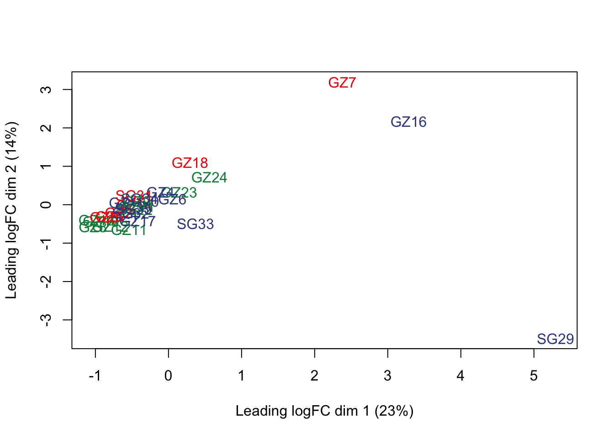
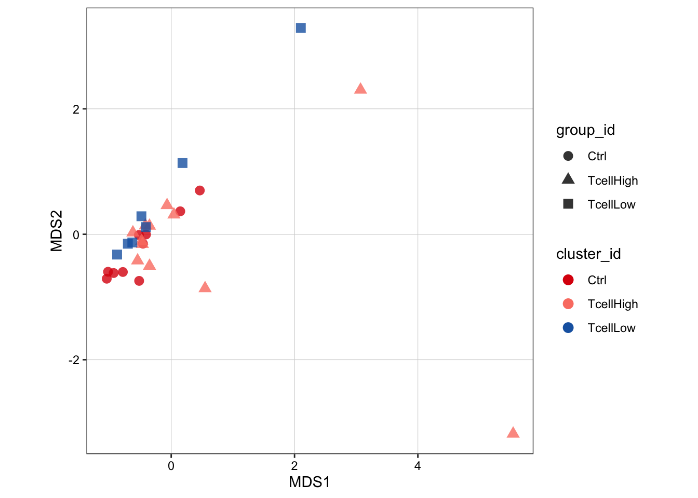

cluster samples
Mechthild Lütge
14 May 2020
Last updated: 2022-10-12
Checks: 6 1
Knit directory: humanCardiacFibroblasts/
This reproducible R Markdown analysis was created with workflowr (version 1.7.0). The Checks tab describes the reproducibility checks that were applied when the results were created. The Past versions tab lists the development history.
The R Markdown is untracked by Git. To know which version of the R
Markdown file created these results, you’ll want to first commit it to
the Git repo. If you’re still working on the analysis, you can ignore
this warning. When you’re finished, you can run
wflow_publish to commit the R Markdown file and build the
HTML.
Great job! The global environment was empty. Objects defined in the global environment can affect the analysis in your R Markdown file in unknown ways. For reproduciblity it’s best to always run the code in an empty environment.
The command set.seed(20210903) was run prior to running
the code in the R Markdown file. Setting a seed ensures that any results
that rely on randomness, e.g. subsampling or permutations, are
reproducible.
Great job! Recording the operating system, R version, and package versions is critical for reproducibility.
Nice! There were no cached chunks for this analysis, so you can be confident that you successfully produced the results during this run.
Great job! Using relative paths to the files within your workflowr project makes it easier to run your code on other machines.
Great! You are using Git for version control. Tracking code development and connecting the code version to the results is critical for reproducibility.
The results in this page were generated with repository version 8504490. See the Past versions tab to see a history of the changes made to the R Markdown and HTML files.
Note that you need to be careful to ensure that all relevant files for
the analysis have been committed to Git prior to generating the results
(you can use wflow_publish or
wflow_git_commit). workflowr only checks the R Markdown
file, but you know if there are other scripts or data files that it
depends on. Below is the status of the Git repository when the results
were generated:
Ignored files:
Ignored: .DS_Store
Ignored: .Rhistory
Ignored: .Rproj.user/
Ignored: data/GSEA/
Ignored: data/humanFibroblast/
Ignored: figure/DEgenesGZplusSG_Groups.Rmd/.DS_Store
Untracked files:
Untracked: analysis/clusterPatients.Rmd
Unstaged changes:
Modified: analysis/DEgenesGZplusSG_SubsetHT.Rmd
Modified: analysis/assignLabelshumanHeartsPlusGrazInt.Rmd
Note that any generated files, e.g. HTML, png, CSS, etc., are not included in this status report because it is ok for generated content to have uncommitted changes.
There are no past versions. Publish this analysis with
wflow_publish() to start tracking its development.
load packages
suppressPackageStartupMessages({
library(SingleCellExperiment)
library(tidyverse)
library(Seurat)
library(magrittr)
library(dplyr)
library(purrr)
library(ggplot2)
library(here)
library(runSeurat3)
library(ggsci)
library(ggpubr)
library(pheatmap)
library(viridis)
library(scran)
library(edgeR)
library(muscat)
})load data
basedir <- here()
seurat <- readRDS(file = paste0(basedir,
"/data/humanHeartsPlusGraz_intPatients_merged",
"labeled_seurat.rds"))
Idents(seurat) <- seurat$IDcolor vectors
colPal <- c(pal_igv()(12),
pal_aaas()(10))[1:length(levels(seurat))]
colTec <- pal_jama()(length(unique(seurat$technique)))
colSmp <- c(pal_uchicago()(9), pal_npg()(10), pal_aaas()(10),
pal_jama()(7))[1:length(unique(seurat$dataset))]
colCond <- pal_npg()(length(unique(seurat$cond)))
colID <- c(pal_jco()(10), pal_npg()(10), pal_futurama()(10),
pal_d3()(10))[1:length(unique(seurat$ID))]
colOrig <- pal_aaas()(length(unique(seurat$origin)))
colIso <- pal_nejm()(length(unique(seurat$isolation)))
colTG <- pal_aaas()(length(unique(seurat$TcellGrp)))
colLab <- pal_futurama()(length(unique(seurat$label)))
names(colPal) <- levels(seurat)
names(colTec) <- unique(seurat$technique)
names(colSmp) <- unique(seurat$dataset)
names(colCond) <- unique(seurat$cond)
names(colID) <- unique(seurat$ID)
names(colOrig) <- unique(seurat$origin)
names(colIso) <- unique(seurat$isolation)
names(colTG) <- unique(seurat$TcellGrp)
names(colLab) <- unique(seurat$label)vis data
label
DimPlot(seurat, reduction = "umap", group.by = "label", cols=colLab)+
theme_bw() +
theme(axis.text = element_blank(), axis.ticks = element_blank(),
panel.grid.minor = element_blank()) +
xlab("UMAP1") +
ylab("UMAP2")
technique
DimPlot(seurat, reduction = "umap", group.by = "technique", cols=colTec)+
theme_bw() +
theme(axis.text = element_blank(), axis.ticks = element_blank(),
panel.grid.minor = element_blank()) +
xlab("UMAP1") +
ylab("UMAP2")
Sample
DimPlot(seurat, reduction = "umap", group.by = "dataset", cols=colSmp)+
theme_bw() +
theme(axis.text = element_blank(), axis.ticks = element_blank(),
panel.grid.minor = element_blank()) +
xlab("UMAP1") +
ylab("UMAP2")
ID
DimPlot(seurat, reduction = "umap", group.by = "ID", cols=colID)+
theme_bw() +
theme(axis.text = element_blank(), axis.ticks = element_blank(),
panel.grid.minor = element_blank()) +
xlab("UMAP1") +
ylab("UMAP2")
Origin
DimPlot(seurat, reduction = "umap", group.by = "origin", cols=colOrig)+
theme_bw() +
theme(axis.text = element_blank(), axis.ticks = element_blank(),
panel.grid.minor = element_blank()) +
xlab("UMAP1") +
ylab("UMAP2")
cond
DimPlot(seurat, reduction = "umap", group.by = "cond", cols=colCond)+
theme_bw() +
theme(axis.text = element_blank(), axis.ticks = element_blank(),
panel.grid.minor = element_blank()) +
xlab("UMAP1") +
ylab("UMAP2")
T cell grp
DimPlot(seurat, reduction = "umap", group.by = "TcellGrp", cols=colTG)+
theme_bw() +
theme(axis.text = element_blank(), axis.ticks = element_blank(),
panel.grid.minor = element_blank()) +
xlab("UMAP1") +
ylab("UMAP2")
cluster patients without downsampling
vis and cluster based on celltype abundance
## remove "other" cells
seurat <- subset(seurat, label=="other", invert=T)
## prepare seurat object
DefaultAssay(seurat) <- "RNA"
seurat <- FindVariableFeatures(seurat)
seurat <- ScaleData(seurat)
seurat <- RunPCA(seurat)
sce <- as.SingleCellExperiment(seurat)
by.label <- table(colLabels(sce), sce$ID)
patGrp <- data.frame(unique(cbind(sce$ID, sce$TcellGrp)))
colnames(patGrp) <- c("ID", "TcellGrp")
patGrpCol <- patGrp %>% dplyr::select(TcellGrp)
rownames(patGrpCol) <- patGrp$ID
pheatmap::pheatmap(log2(by.label+1), color=viridis::viridis(101),
annotation_col = patGrpCol,
annotation_colors = list(TcellGrp=colTG))
perform pseudo-bulking
altExp(sce) <- NULL
summed <- aggregateAcrossCells(sce,
id=colData(sce)[,c("ID")])
summed$ncells [1] 2681 3638 3964 3796 9677 1258 4362 425 1342 2251 1654 2686 1427 1968 834
[16] 1469 2359 537 754 488 600 3852 4874 1227 1169 1395 6254 614 2334y <- DGEList(counts(summed), samples=colData(summed))
keep <- filterByExpr(y, group=summed$TcellGrp)
y <- y[keep,]
summary(keep) Mode FALSE TRUE
logical 19666 18515 y <- calcNormFactors(y)
for (i in seq_len(ncol(y))) {
plotMD(y, column=i)
}
plotMDS(cpm(y, log=TRUE),
col=ifelse(y$samples$TcellGrp == "Ctrl", colTG["Ctrl"],
ifelse(y$samples$TcellGrp == "TcellLow",
colTG["TcellLow"], colTG["TcellHigh"])))
muscat
sce <- prepSCE(sce,
kid = "TcellGrp",
gid = "TcellGrp",
sid = "ID",
drop = TRUE)
nk <- length(kids <- levels(sce$cluster_id))
ns <- length(sids <- levels(sce$sample_id))
names(kids) <- kids; names(sids) <- sids
pb <- aggregateData(sce,
assay = "counts", fun = "sum",
by = c("cluster_id", "sample_id"))
# one sheet per subpopulation
assayNames(pb)[1] "Ctrl" "TcellHigh" "TcellLow" pbMDS(pb)
cluster patients after downsampling
vis and cluster based on celltype abundance
table(seurat$ID)
GZ1 GZ10 GZ11 GZ12 GZ13 GZ14 GZ15 GZ16 GZ17 GZ18 GZ2 GZ20 GZ21 GZ22 GZ23 GZ24
2681 3638 3964 3796 9677 1258 4362 425 1342 2251 1654 2686 1427 1968 834 1469
GZ3 GZ4 GZ5 GZ6 GZ7 GZ8 GZ9 SG29 SG31 SG32 SG33 SG34 SG35
2359 537 754 488 600 3852 4874 1227 1169 1395 6254 614 2334 min(table(seurat$ID))[1] 425max(table(seurat$ID))[1] 9677Idents(seurat) <- seurat$ID
seuratSub <- subset(seurat, downsample = 500)
sce <- as.SingleCellExperiment(seuratSub)
by.label <- table(colLabels(sce), sce$ID)
patGrp <- data.frame(unique(cbind(sce$ID, sce$TcellGrp)))
colnames(patGrp) <- c("ID", "TcellGrp")
patGrpCol <- patGrp %>% dplyr::select(TcellGrp)
rownames(patGrpCol) <- patGrp$ID
pheatmap::pheatmap(log2(by.label+1), color=viridis::viridis(101),
annotation_col = patGrpCol,
annotation_colors = list(TcellGrp=colTG))
perform pseudo-bulking
altExp(sce) <- NULL
summed <- aggregateAcrossCells(sce,
id=colData(sce)[,c("ID")])
summed$ncells [1] 500 500 500 500 500 500 500 425 500 500 500 500 500 500 500 500 500 500 500
[20] 488 500 500 500 500 500 500 500 500 500y <- DGEList(counts(summed), samples=colData(summed))
keep <- filterByExpr(y, group=summed$TcellGrp)
y <- y[keep,]
summary(keep) Mode FALSE TRUE
logical 24595 13586 y <- calcNormFactors(y)
for (i in seq_len(ncol(y))) {
plotMD(y, column=i)
}


plotMDS(cpm(y, log=TRUE),
col=ifelse(y$samples$TcellGrp == "Ctrl", colTG["Ctrl"],
ifelse(y$samples$TcellGrp == "TcellLow",
colTG["TcellLow"], colTG["TcellHigh"])))
muscat
sce <- prepSCE(sce,
kid = "TcellGrp",
gid = "TcellGrp",
sid = "ID",
drop = TRUE)
nk <- length(kids <- levels(sce$cluster_id))
ns <- length(sids <- levels(sce$sample_id))
names(kids) <- kids; names(sids) <- sids
pb <- aggregateData(sce,
assay = "counts", fun = "sum",
by = c("cluster_id", "sample_id"))
# one sheet per subpopulation
assayNames(pb)[1] "Ctrl" "TcellHigh" "TcellLow" pbMDS(pb)
cluster patients after downsampling withoout highly active pat
vis and cluster based on celltype abundance
seuratSub <- subset(seuratSub, ID %in% c("SG29", "SG33"), invert=T)
sce <- as.SingleCellExperiment(seuratSub)
by.label <- table(colLabels(sce), sce$ID)
patGrp <- data.frame(unique(cbind(sce$ID, sce$TcellGrp)))
colnames(patGrp) <- c("ID", "TcellGrp")
patGrpCol <- patGrp %>% dplyr::select(TcellGrp)
rownames(patGrpCol) <- patGrp$ID
pheatmap::pheatmap(log2(by.label+1), color=viridis::viridis(101),
annotation_col = patGrpCol,
annotation_colors = list(TcellGrp=colTG))
perform pseudo-bulking
altExp(sce) <- NULL
summed <- aggregateAcrossCells(sce,
id=colData(sce)[,c("ID")])
summed$ncells [1] 500 500 500 500 500 500 500 425 500 500 500 500 500 500 500 500 500 500 500
[20] 488 500 500 500 500 500 500 500y <- DGEList(counts(summed), samples=colData(summed))
keep <- filterByExpr(y, group=summed$TcellGrp)
y <- y[keep,]
summary(keep) Mode FALSE TRUE
logical 24701 13480 y <- calcNormFactors(y)
for (i in seq_len(ncol(y))) {
plotMD(y, column=i)
}


plotMDS(cpm(y, log=TRUE),
col=ifelse(y$samples$TcellGrp == "Ctrl", colTG["Ctrl"],
ifelse(y$samples$TcellGrp == "TcellLow",
colTG["TcellLow"], colTG["TcellHigh"])))
muscat
sce <- prepSCE(sce,
kid = "TcellGrp",
gid = "TcellGrp",
sid = "ID",
drop = TRUE)
nk <- length(kids <- levels(sce$cluster_id))
ns <- length(sids <- levels(sce$sample_id))
names(kids) <- kids; names(sids) <- sids
pb <- aggregateData(sce,
assay = "counts", fun = "sum",
by = c("cluster_id", "sample_id"))
# one sheet per subpopulation
assayNames(pb)[1] "Ctrl" "TcellHigh" "TcellLow" pbMDS(pb)
session info
sessionInfo()R version 4.2.1 (2022-06-23)
Platform: x86_64-apple-darwin17.0 (64-bit)
Running under: macOS Big Sur ... 10.16
Matrix products: default
BLAS: /Library/Frameworks/R.framework/Versions/4.2/Resources/lib/libRblas.0.dylib
LAPACK: /Library/Frameworks/R.framework/Versions/4.2/Resources/lib/libRlapack.dylib
locale:
[1] en_US.UTF-8/en_US.UTF-8/en_US.UTF-8/C/en_US.UTF-8/en_US.UTF-8
attached base packages:
[1] stats4 stats graphics grDevices utils datasets methods
[8] base
other attached packages:
[1] muscat_1.10.1 edgeR_3.38.4
[3] limma_3.52.4 scran_1.24.1
[5] scuttle_1.6.3 viridis_0.6.2
[7] viridisLite_0.4.1 pheatmap_1.0.12
[9] ggpubr_0.4.0 ggsci_2.9
[11] runSeurat3_0.1.0 here_1.0.1
[13] magrittr_2.0.3 sp_1.5-0
[15] SeuratObject_4.1.2 Seurat_4.2.0
[17] forcats_0.5.2 stringr_1.4.1
[19] dplyr_1.0.10 purrr_0.3.5
[21] readr_2.1.3 tidyr_1.2.1
[23] tibble_3.1.8 ggplot2_3.3.6
[25] tidyverse_1.3.2 SingleCellExperiment_1.18.1
[27] SummarizedExperiment_1.26.1 Biobase_2.56.0
[29] GenomicRanges_1.48.0 GenomeInfoDb_1.32.4
[31] IRanges_2.30.1 S4Vectors_0.34.0
[33] BiocGenerics_0.42.0 MatrixGenerics_1.8.1
[35] matrixStats_0.62.0
loaded via a namespace (and not attached):
[1] scattermore_0.8 bit64_4.0.5
[3] knitr_1.40 irlba_2.3.5.1
[5] DelayedArray_0.22.0 data.table_1.14.2
[7] rpart_4.1.16 KEGGREST_1.36.3
[9] RCurl_1.98-1.9 doParallel_1.0.17
[11] generics_0.1.3 ScaledMatrix_1.4.1
[13] RhpcBLASctl_0.21-247.1 cowplot_1.1.1
[15] RSQLite_2.2.18 RANN_2.6.1
[17] future_1.28.0 bit_4.0.4
[19] tzdb_0.3.0 spatstat.data_2.2-0
[21] xml2_1.3.3 lubridate_1.8.0
[23] httpuv_1.6.6 assertthat_0.2.1
[25] gargle_1.2.1 xfun_0.33
[27] hms_1.1.2 jquerylib_0.1.4
[29] evaluate_0.17 promises_1.2.0.1
[31] progress_1.2.2 fansi_1.0.3
[33] caTools_1.18.2 dbplyr_2.2.1
[35] readxl_1.4.1 geneplotter_1.74.0
[37] igraph_1.3.5 DBI_1.1.3
[39] htmlwidgets_1.5.4 spatstat.geom_2.4-0
[41] googledrive_2.0.0 ellipsis_0.3.2
[43] backports_1.4.1 annotate_1.74.0
[45] aod_1.3.2 deldir_1.0-6
[47] sparseMatrixStats_1.8.0 vctrs_0.4.2
[49] ROCR_1.0-11 abind_1.4-5
[51] cachem_1.0.6 withr_2.5.0
[53] progressr_0.11.0 sctransform_0.3.5
[55] prettyunits_1.1.1 goftest_1.2-3
[57] cluster_2.1.4 lazyeval_0.2.2
[59] crayon_1.5.2 genefilter_1.78.0
[61] labeling_0.4.2 pkgconfig_2.0.3
[63] vipor_0.4.5 nlme_3.1-159
[65] blme_1.0-5 rlang_1.0.6
[67] globals_0.16.1 lifecycle_1.0.3
[69] miniUI_0.1.1.1 modelr_0.1.9
[71] rsvd_1.0.5 cellranger_1.1.0
[73] rprojroot_2.0.3 polyclip_1.10-0
[75] lmtest_0.9-40 Matrix_1.5-1
[77] carData_3.0-5 boot_1.3-28
[79] zoo_1.8-11 beeswarm_0.4.0
[81] reprex_2.0.2 ggridges_0.5.4
[83] GlobalOptions_0.1.2 googlesheets4_1.0.1
[85] png_0.1-7 rjson_0.2.21
[87] bitops_1.0-7 KernSmooth_2.23-20
[89] Biostrings_2.64.1 blob_1.2.3
[91] DelayedMatrixStats_1.18.1 workflowr_1.7.0
[93] shape_1.4.6 parallelly_1.32.1
[95] spatstat.random_2.2-0 rstatix_0.7.0
[97] ggsignif_0.6.3 beachmat_2.12.0
[99] scales_1.2.1 memoise_2.0.1
[101] plyr_1.8.7 ica_1.0-3
[103] gplots_3.1.3 zlibbioc_1.42.0
[105] compiler_4.2.1 dqrng_0.3.0
[107] RColorBrewer_1.1-3 lme4_1.1-30
[109] clue_0.3-61 DESeq2_1.36.0
[111] fitdistrplus_1.1-8 cli_3.4.1
[113] XVector_0.36.0 lmerTest_3.1-3
[115] listenv_0.8.0 TMB_1.9.1
[117] patchwork_1.1.2 pbapply_1.5-0
[119] MASS_7.3-58.1 mgcv_1.8-40
[121] tidyselect_1.2.0 stringi_1.7.8
[123] highr_0.9 yaml_2.3.5
[125] BiocSingular_1.12.0 locfit_1.5-9.6
[127] ggrepel_0.9.1 grid_4.2.1
[129] sass_0.4.2 tools_4.2.1
[131] future.apply_1.9.1 parallel_4.2.1
[133] circlize_0.4.15 rstudioapi_0.14
[135] bluster_1.6.0 foreach_1.5.2
[137] git2r_0.30.1 metapod_1.4.0
[139] gridExtra_2.3 farver_2.1.1
[141] Rtsne_0.16 digest_0.6.29
[143] rgeos_0.5-9 shiny_1.7.2
[145] Rcpp_1.0.9 car_3.1-0
[147] broom_1.0.1 later_1.3.0
[149] RcppAnnoy_0.0.19 httr_1.4.4
[151] AnnotationDbi_1.58.0 ComplexHeatmap_2.12.1
[153] Rdpack_2.4 colorspace_2.0-3
[155] rvest_1.0.3 XML_3.99-0.11
[157] fs_1.5.2 tensor_1.5
[159] reticulate_1.26 splines_4.2.1
[161] uwot_0.1.14 statmod_1.4.37
[163] spatstat.utils_2.3-1 scater_1.24.0
[165] plotly_4.10.0 xtable_1.8-4
[167] nloptr_2.0.3 jsonlite_1.8.2
[169] R6_2.5.1 pillar_1.8.1
[171] htmltools_0.5.3 mime_0.12
[173] minqa_1.2.4 glue_1.6.2
[175] fastmap_1.1.0 BiocParallel_1.30.3
[177] BiocNeighbors_1.14.0 codetools_0.2-18
[179] utf8_1.2.2 lattice_0.20-45
[181] bslib_0.4.0 spatstat.sparse_2.1-1
[183] pbkrtest_0.5.1 numDeriv_2016.8-1.1
[185] ggbeeswarm_0.6.0 leiden_0.4.3
[187] gtools_3.9.3 glmmTMB_1.1.4
[189] survival_3.4-0 rmarkdown_2.17
[191] munsell_0.5.0 GetoptLong_1.0.5
[193] GenomeInfoDbData_1.2.8 iterators_1.0.14
[195] variancePartition_1.26.0 haven_2.5.1
[197] reshape2_1.4.4 gtable_0.3.1
[199] rbibutils_2.2.9 spatstat.core_2.4-4 date()[1] "Wed Oct 12 14:45:38 2022"
sessionInfo()R version 4.2.1 (2022-06-23)
Platform: x86_64-apple-darwin17.0 (64-bit)
Running under: macOS Big Sur ... 10.16
Matrix products: default
BLAS: /Library/Frameworks/R.framework/Versions/4.2/Resources/lib/libRblas.0.dylib
LAPACK: /Library/Frameworks/R.framework/Versions/4.2/Resources/lib/libRlapack.dylib
locale:
[1] en_US.UTF-8/en_US.UTF-8/en_US.UTF-8/C/en_US.UTF-8/en_US.UTF-8
attached base packages:
[1] stats4 stats graphics grDevices utils datasets methods
[8] base
other attached packages:
[1] muscat_1.10.1 edgeR_3.38.4
[3] limma_3.52.4 scran_1.24.1
[5] scuttle_1.6.3 viridis_0.6.2
[7] viridisLite_0.4.1 pheatmap_1.0.12
[9] ggpubr_0.4.0 ggsci_2.9
[11] runSeurat3_0.1.0 here_1.0.1
[13] magrittr_2.0.3 sp_1.5-0
[15] SeuratObject_4.1.2 Seurat_4.2.0
[17] forcats_0.5.2 stringr_1.4.1
[19] dplyr_1.0.10 purrr_0.3.5
[21] readr_2.1.3 tidyr_1.2.1
[23] tibble_3.1.8 ggplot2_3.3.6
[25] tidyverse_1.3.2 SingleCellExperiment_1.18.1
[27] SummarizedExperiment_1.26.1 Biobase_2.56.0
[29] GenomicRanges_1.48.0 GenomeInfoDb_1.32.4
[31] IRanges_2.30.1 S4Vectors_0.34.0
[33] BiocGenerics_0.42.0 MatrixGenerics_1.8.1
[35] matrixStats_0.62.0
loaded via a namespace (and not attached):
[1] scattermore_0.8 bit64_4.0.5
[3] knitr_1.40 irlba_2.3.5.1
[5] DelayedArray_0.22.0 data.table_1.14.2
[7] rpart_4.1.16 KEGGREST_1.36.3
[9] RCurl_1.98-1.9 doParallel_1.0.17
[11] generics_0.1.3 ScaledMatrix_1.4.1
[13] RhpcBLASctl_0.21-247.1 cowplot_1.1.1
[15] RSQLite_2.2.18 RANN_2.6.1
[17] future_1.28.0 bit_4.0.4
[19] tzdb_0.3.0 spatstat.data_2.2-0
[21] xml2_1.3.3 lubridate_1.8.0
[23] httpuv_1.6.6 assertthat_0.2.1
[25] gargle_1.2.1 xfun_0.33
[27] hms_1.1.2 jquerylib_0.1.4
[29] evaluate_0.17 promises_1.2.0.1
[31] progress_1.2.2 fansi_1.0.3
[33] caTools_1.18.2 dbplyr_2.2.1
[35] readxl_1.4.1 geneplotter_1.74.0
[37] igraph_1.3.5 DBI_1.1.3
[39] htmlwidgets_1.5.4 spatstat.geom_2.4-0
[41] googledrive_2.0.0 ellipsis_0.3.2
[43] backports_1.4.1 annotate_1.74.0
[45] aod_1.3.2 deldir_1.0-6
[47] sparseMatrixStats_1.8.0 vctrs_0.4.2
[49] ROCR_1.0-11 abind_1.4-5
[51] cachem_1.0.6 withr_2.5.0
[53] progressr_0.11.0 sctransform_0.3.5
[55] prettyunits_1.1.1 goftest_1.2-3
[57] cluster_2.1.4 lazyeval_0.2.2
[59] crayon_1.5.2 genefilter_1.78.0
[61] labeling_0.4.2 pkgconfig_2.0.3
[63] vipor_0.4.5 nlme_3.1-159
[65] blme_1.0-5 rlang_1.0.6
[67] globals_0.16.1 lifecycle_1.0.3
[69] miniUI_0.1.1.1 modelr_0.1.9
[71] rsvd_1.0.5 cellranger_1.1.0
[73] rprojroot_2.0.3 polyclip_1.10-0
[75] lmtest_0.9-40 Matrix_1.5-1
[77] carData_3.0-5 boot_1.3-28
[79] zoo_1.8-11 beeswarm_0.4.0
[81] reprex_2.0.2 ggridges_0.5.4
[83] GlobalOptions_0.1.2 googlesheets4_1.0.1
[85] png_0.1-7 rjson_0.2.21
[87] bitops_1.0-7 KernSmooth_2.23-20
[89] Biostrings_2.64.1 blob_1.2.3
[91] DelayedMatrixStats_1.18.1 workflowr_1.7.0
[93] shape_1.4.6 parallelly_1.32.1
[95] spatstat.random_2.2-0 rstatix_0.7.0
[97] ggsignif_0.6.3 beachmat_2.12.0
[99] scales_1.2.1 memoise_2.0.1
[101] plyr_1.8.7 ica_1.0-3
[103] gplots_3.1.3 zlibbioc_1.42.0
[105] compiler_4.2.1 dqrng_0.3.0
[107] RColorBrewer_1.1-3 lme4_1.1-30
[109] clue_0.3-61 DESeq2_1.36.0
[111] fitdistrplus_1.1-8 cli_3.4.1
[113] XVector_0.36.0 lmerTest_3.1-3
[115] listenv_0.8.0 TMB_1.9.1
[117] patchwork_1.1.2 pbapply_1.5-0
[119] MASS_7.3-58.1 mgcv_1.8-40
[121] tidyselect_1.2.0 stringi_1.7.8
[123] highr_0.9 yaml_2.3.5
[125] BiocSingular_1.12.0 locfit_1.5-9.6
[127] ggrepel_0.9.1 grid_4.2.1
[129] sass_0.4.2 tools_4.2.1
[131] future.apply_1.9.1 parallel_4.2.1
[133] circlize_0.4.15 rstudioapi_0.14
[135] bluster_1.6.0 foreach_1.5.2
[137] git2r_0.30.1 metapod_1.4.0
[139] gridExtra_2.3 farver_2.1.1
[141] Rtsne_0.16 digest_0.6.29
[143] rgeos_0.5-9 shiny_1.7.2
[145] Rcpp_1.0.9 car_3.1-0
[147] broom_1.0.1 later_1.3.0
[149] RcppAnnoy_0.0.19 httr_1.4.4
[151] AnnotationDbi_1.58.0 ComplexHeatmap_2.12.1
[153] Rdpack_2.4 colorspace_2.0-3
[155] rvest_1.0.3 XML_3.99-0.11
[157] fs_1.5.2 tensor_1.5
[159] reticulate_1.26 splines_4.2.1
[161] uwot_0.1.14 statmod_1.4.37
[163] spatstat.utils_2.3-1 scater_1.24.0
[165] plotly_4.10.0 xtable_1.8-4
[167] nloptr_2.0.3 jsonlite_1.8.2
[169] R6_2.5.1 pillar_1.8.1
[171] htmltools_0.5.3 mime_0.12
[173] minqa_1.2.4 glue_1.6.2
[175] fastmap_1.1.0 BiocParallel_1.30.3
[177] BiocNeighbors_1.14.0 codetools_0.2-18
[179] utf8_1.2.2 lattice_0.20-45
[181] bslib_0.4.0 spatstat.sparse_2.1-1
[183] pbkrtest_0.5.1 numDeriv_2016.8-1.1
[185] ggbeeswarm_0.6.0 leiden_0.4.3
[187] gtools_3.9.3 glmmTMB_1.1.4
[189] survival_3.4-0 rmarkdown_2.17
[191] munsell_0.5.0 GetoptLong_1.0.5
[193] GenomeInfoDbData_1.2.8 iterators_1.0.14
[195] variancePartition_1.26.0 haven_2.5.1
[197] reshape2_1.4.4 gtable_0.3.1
[199] rbibutils_2.2.9 spatstat.core_2.4-4